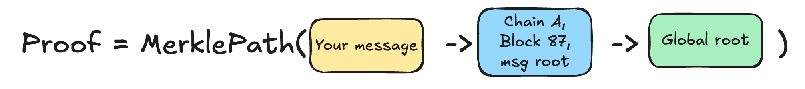

Interop Messages
In this section, we’re going to cover the lowest level of the interop stack: Interop Messages — the interface that forms the foundation for everything else.
We’ll explore the details of the interface, its use cases, and how it compares to similar interfaces from Superchain/Optimism.
This is an advanced document. While most users and app developers typically interact with higher levels of interop, it’s still valuable to understand how the internals work.
Basics

Interop Messages are the lowest level of our stack.
An InteropMessage contains data and offers two methods:
- Send a message
- Verify that a given message was sent on some chain
Notice that the message itself doesn’t have any ‘destination chain’ or address—it is simply a payload that a user (or contract) is creating. Think of it as a broadcast.
The InteropCenter is a contract that is pre-deployed on all chains at a fixed address 0x00..1234.
contract InteropCenter {
// Sends interop message. Can be called by anyone.
// Returns the unique interopHash.
function sendInteropMessage(bytes data) returns interopHash;
// Interop message - uniquely identified by the hash of the payload.
struct InteropMessage {
bytes data;
address sender; // filled by InteropCenter
uint256 sourceChainId; // filled by InteropCenter
uint256 messageNum; // a 'nonce' to guarantee different hashes.
}
// Verifies if such interop message was ever producted.
function verifyInteropMessage(bytes32 interopHash, Proof merkleProof) return bool;
}
When you call sendInteropMessage, the InteropCenter adds additional fields, such as your sender address, source
chain ID, and messageNum (a nonce ensuring the hash of this structure is globally unique). It then returns the
interopHash.
This interopHash serves as a globally unique identifier that can be used on any chain in the network to call
verifyInteropMessage.

How do I get the proof
You’ll notice that verifyInteropMessage has a second argument — a proof that you need to provide. This proof is a Merkle tree proof (more details below). You can obtain it by querying the chain , or generate it off-chain - by looking at the chain’s state on L1
How does the interop message differ from other layers (InteropTransactions, InteropCalls)
As the most basic layer, an interop message doesn’t include any advanced features — it lacks support for selecting destination chains, nullifiers/replay, cancellation, and more.
If you need these capabilities, consider integrating with a higher layer of interop, such as Call or Bundle, which provide these additional functionalities.
Simple Use Case
Before we dive into the details of how the system works, let’s look at a simple use case for a DApp that decides to use InteropMessage.
For this example, imagine a basic cross-chain contract where the signup() method can be called on chains B, C, and D
only if someone has first called signup_open() on chain A.
// Contract deployed on chain A.
contract SignupManager {
public bytes32 sigup_open_msg_hash;
function signup_open() onlyOwner {
// We are open for business
signup_open_msg_hash = InteropCenter(INTEROP_CENTER_ADDRESS).sendInteropMessage("We are open");
}
}
// Contract deployed on all other chains.
contract SignupContract {
public bool signupIsOpen;
// Anyone can call it.
function openSignup(InteropMessage message, InteropProof proof) {
InteropCenter(INTEROP_CENTER_ADDRESS).verifyInteropMessage(keccak(message), proof);
require(message.sourceChainId == CHAIN_A_ID);
require(message.sender == SIGNUP_MANAGER_ON_CHAIN_A);
require(message.data == "We are open");
signupIsOpen = true;
}
function signup() {
require(signupIsOpen);
signedUpUser[msg.sender] = true;
}
}
In the example above, the signupManager on chain A calls the signup_open method. After that, any user on other
chains can retrieve the signup_open_msg_hash, obtain the necessary proof from the Gateway (or another source), and
call the openSignup function on any destination chain.
Deeper Technical Dive
Let’s break down what happens inside the InteropCenter when a new interop message is created:
function sendInteropMessage(bytes data) {
messageNum += 1;
msg = InteropMessage({data, msg.sender, block.chain_id, messageNum});
// Does L2->L1 Messaging.
sendToL1(abi.encode(msg));
return keccak(msg);
}
As you can see, it populates the necessary data and then calls the sendToL1 method.
The sendToL1 method is part of a system contract that gathers all messages during a batch, constructs a Merkle tree
from them at the end of the batch, and sends this tree to the SettlementLayer (Gateway) when the batch is committed.

The settlement layer receives the messages and once the proof for the batch is submitted (or more accurately, during the
“execute” step), it will add the root of the Merkle tree to its messageRoot (sometimes called globalRoot).

The messageRoot is the root of the Merkle tree that includes all messages from all chains. Each chain regularly reads
the messageRoot value from the Gateway to stay synchronized.

If a user wants to call verifyInteropMessage on a chain, they first need to query the Gateway for the Merkle path from
the batch they are interested in up to the messageRoot. Once they have this path, they can provide it as an argument
when calling a method on the destination chain (such as the openSignup method in our example).

What if Chain doesn’t provide the proof
If the chain doesn’t respond, users can manually re-create the Merkle proof using data available on L1. Every interopMessage is also sent to L1.
Message roots change frequently
Yes, message roots update continuously as new chains prove their blocks. However, chains retain historical message roots for a reasonable period (around 24 hours) to ensure that recently generated Merkle paths remain valid.
Is this secure? Could a chain operator, like Chain D, use a different message root
Yes, it’s secure. If a malicious operator on Chain D attempted to use a different message root, they wouldn’t be able to submit the proof for their new batch to the Gateway. This is because the proof’s public inputs must include the valid message root.
Other Features
Dependency Set
- In ElasticChain, this is implicitly handled by the Gateway. Any chain that is part of the message root can exchange messages with any other chain, effectively forming an undirected graph.
Timestamps and Expiration
- In ElasticChain, older messages become increasingly difficult to validate as it becomes harder to gather the data required to construct a Merkle proof. Expiration is also being considered for this reason, but the specifics are yet to be determined.